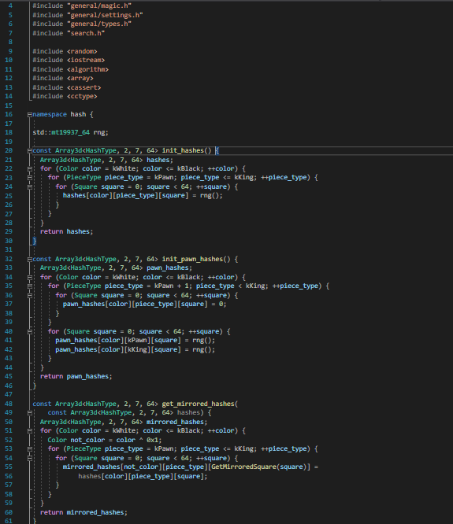
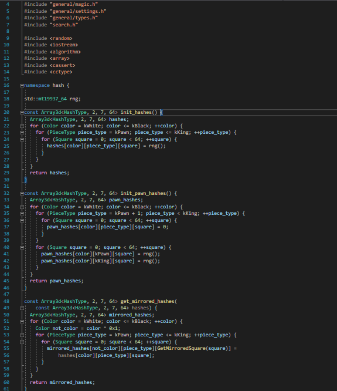

Homemade Chess AI
 

This project represents a big milestone in both my programming journey and my fascination with artificial intelligence. Developed collaboratively with a close friend, this homemade Chess AI showcases my of our passion for chess, logic, and problem-solving. Written primarily in C# and Pascal.
The journey took roughly 16 months, during which we faced numerous challenges, from implementing an efficient minimax algorithm with alpha-beta pruning to optimizing performance for faster move calculation.
One of the standout features of this AI is its ability to dynamically adjust difficulty levels by tweaking its depth of search and decision-making thresholds. The project also involved creating a visual interface for the chessboard, allowing users to play against the AI in an intuitive and seamless environment.
While theres more to discuss about how it works, such as the way we handle opening books and endgame tablebases, the most rewarding aspect of this project was seeing our AI grow from making random moves to playing highly strategic games that even skilled players found challenging.
Snippet of the code, where it attemps to search for pieces using depth and etc, part of the search.cc file.
Snippet of code from the board.cc file.
Details
- Technology: C#, Pascal
- Duration: 16 months